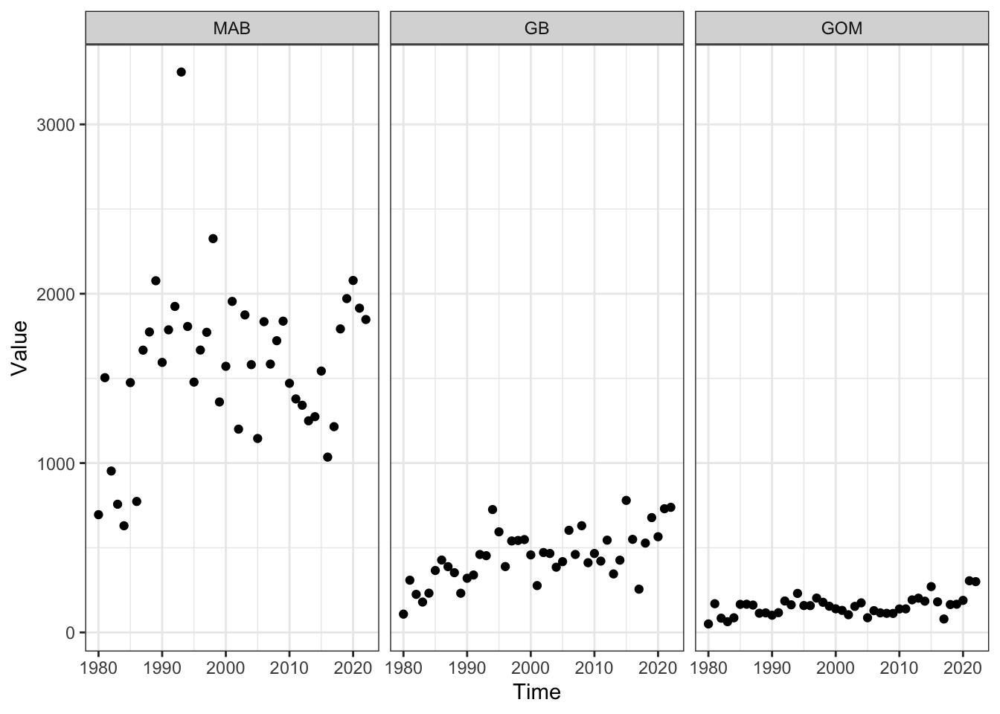
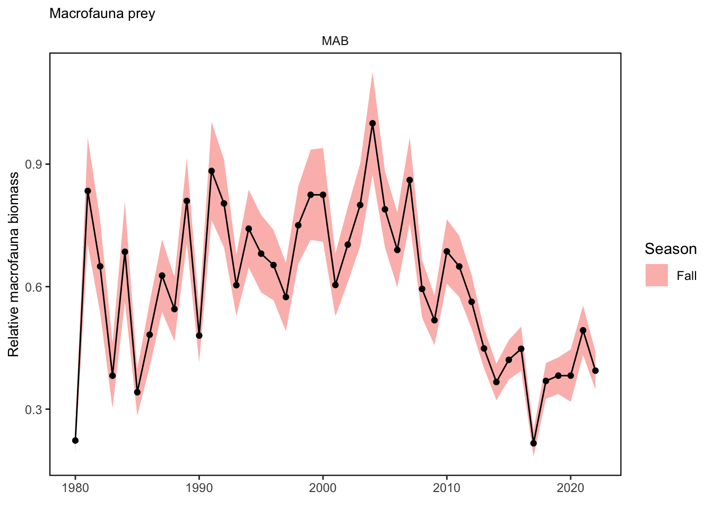
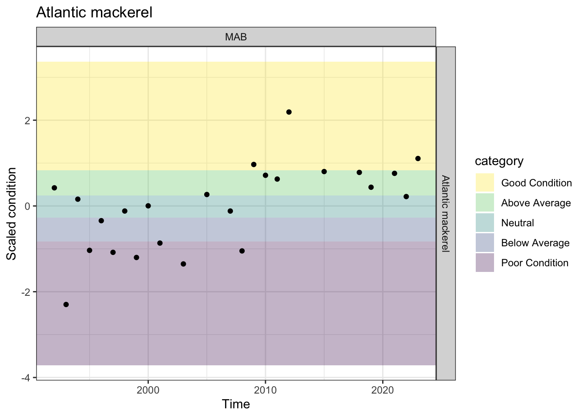
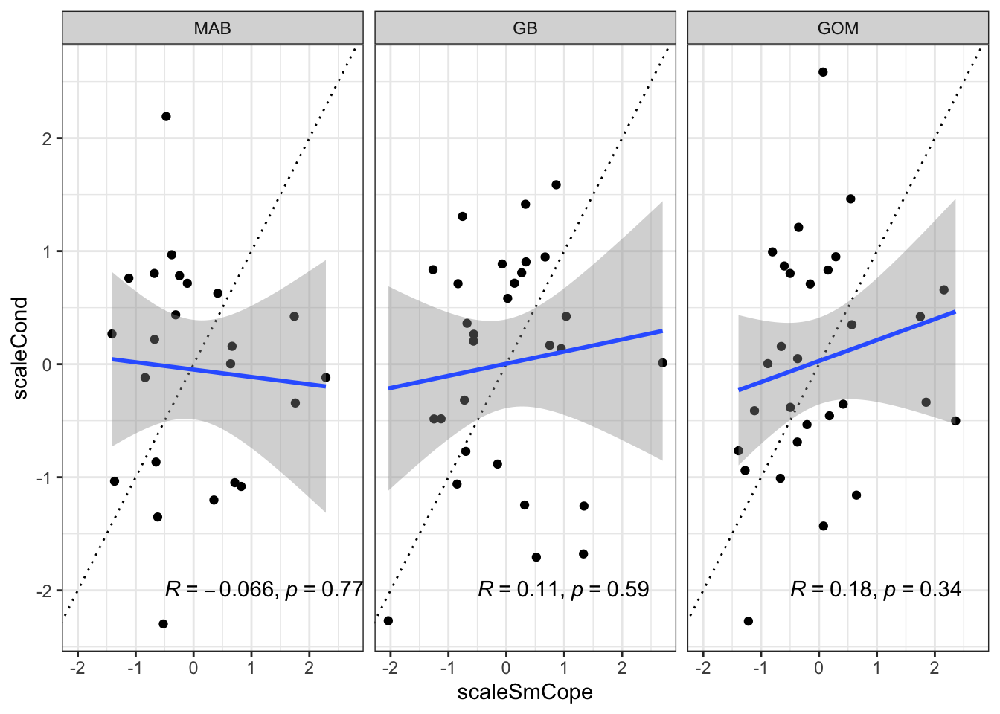

| Risk Level | Definition |
|---|---|
| Low | Prey availability high (not limiting) and/or good fish condition past 5 years |
| Low-Moderate | Aggregate prey available for this species has stable or increasing trend, moderate condition |
| Moderate-High | Aggregate prey available for this species has significant decreasing trend, poor condition |
| High | Managed species highly dependent on prey with limited and declining availability, poor condition |
Food Web Model Risk Indicators
Overview
We want to develop indicators of prey availability and predation pressure for the Mid-Atlantic EAFM risk assessment. We will use the MAB Rpath model by Brandon Beltz to characterize diet composition and predation mortality for fish species managed by the Mid Atlantic Fishery Management Council (MAFMC).
The current ecological risk elements are outlined below.
Food web: Prey availability
This element is applied at the species level.
Fish stocks and protected species stocks are managed using single species approaches, but fish and protected species stocks exist within a food web of predator and prey interactions. This element is one of two separating food web risks to achieving OY for Council managed species from two sources. This first element assesses prey availability for each species, and the second food web risk element assesses predation pressure on each species (see next element).
Proposed definition:
Risk of not achieving OY for Council managed species due to availability of prey.
Indicators:
Indicators of prey availability for each Council managed species could be based on food habits information for the Council managed species combined with population trends for key prey species (if available). Prey could include all species (Council managed, other-managed, and non-managed) or a subset as determined by the EOP and Council.
The MAB Rpath model was used to characterize prey into groups for each of the Council managed species.
Diet plots for each predator? Compare with diet comp from NEFSC diet database here?
Ratio of council managed prey to total prey?
Alternative indirect indicators of prey availability could include the fish condition indicators from the State of the Ecosystem report (shown below under Ecosystem Productivity). These would not rely on detailed diet information, instead reflecting the impact of environmental drivers including prey availability on fish growth.
Diet information was gathered from the Northeast Fisheries Science Center (NEFSC) food habits database and other sources [@smith_trophic_2010; @johnson_growth_2008].
Potential risk criteria:
Rpath Outputs
Indicators from models will be EPU specific since models are EPU specific
Indicators from NEFSC diet data can also be region specific
Steps: Load model
Get the new model that Sarah revised from here
https://github.com/Nyelab/MAB-Rpath/blob/balance_prep/outputs/MAB_Rpath.RData
and
https://github.com/Nyelab/MAB-Rpath/blob/balance_prep/outputs/MAB_params_Rpath.RData
Correction! July 2024
New model is at git@github.com:Nyelab/MAB-Rpath.git branch max_clam_edits
New model is now in local directory for this repo
Code
#load("fwmods/MAB Rpath - BALANCED - July 2022.RData")
#load("fwmods/MAB_Rpath.RData")
#load("fwmods/MAB_params_Rpath.RData")
load("fwmods/MAB_Rpath_no_disc.RData")
load("fwmods/MAB_params_Rpath_no_disc.RData")Is it in? Test view
Code
Rpath::webplot(MAB.rpath, labels = T, highlight = "SummerFlounder")Model parameters
Code
DT::datatable(MAB.rpath.params$model)Select MAFMC managed species
Code
# or use existing ecodata lookup if names are the same?
mafmc <- c("AtlMackerel",
"BlackSeaBass",
"Bluefish",
"Butterfish",
"Goosefish",
"Illex",
"Loligo",
"Scup",
"SpinyDogfish",
"SummerFlounder",
"SurfClam",
"OceanQuahog")#,
#"Clams", # Atlantic surfclam and ocean quahog not separate groups
#"Tilefish") # Blueline and golden tilefish not separate groups
mafmc2 <- ecodata::species_groupings |>
dplyr::filter(Fed.Managed %in% c("MAFMC", "JOINT")) |>
dplyr::select(COMNAME, SVSPP, SCINAME, Fed.Managed, RPATH, SOE.20) |>
dplyr::distinct()Visualize prey compositions (lots of aggregate groups)
These can be the basis for selecting aggregate prey indices.
Code
MAFMCmoddiet <- MAB.rpath.params$diet |>
as.data.frame() |>
dplyr::select(Prey=Group, all_of(mafmc)) |>
na.omit() |>
tidyr::pivot_longer(-Prey, names_to = "Predator", values_to = "Propdiet") |>
dplyr::mutate(mafmcprey = ifelse(Prey %in% mafmc, TRUE, FALSE),
plotcol = ifelse(mafmcprey, "blue", "lightgrey"))
dietplot <- ggplot(MAFMCmoddiet, aes("", Propdiet, fill=mafmcprey)) +
geom_bar(width = 1, size = 1, color = "white", stat = "identity") +
#coord_polar("y") +
geom_text(aes(label = ifelse( Propdiet>0.05, paste0(Prey, " ", round(Propdiet*100), "%"), "")), #\n
position = position_stack(vjust = 0.5),
size=3) +
labs(x = NULL, y = NULL, fill = NULL,
title = "Diet") +
guides(fill = guide_legend(reverse = TRUE)) +
scale_fill_manual(values=c( "grey90", "lightblue")) +
#scale_fill_viridis(discrete=TRUE) +
theme_classic() +
theme(axis.line = element_blank(),
axis.text = element_blank(),
axis.ticks = element_blank(),
plot.title = element_text(hjust = 0.5, color = "#666666"),
legend.position="none") +
facet_wrap(~Predator)Warning: Using `size` aesthetic for lines was deprecated in ggplot2 3.4.0.
ℹ Please use `linewidth` instead.Code
dietplotReview fish condition trends
Which are “good” in the last 5 years?
Use ecodata fall condition as a starting point, ask for stock specific condition if available
Code
mafmc_cond <- c("Atlantic mackerel",
"Black sea bass",
"Bluefish",
"Butterfish",
"Goosefish",
"Illex", #not in condition
"Loligo", #not in condition
"Scup",
"Spiny dogfish",
"Summer flounder",
"Surf clam", #not in condition
"Ocean quahog") #not in condition
#"Clams", # Atlantic surfclam and ocean quahog not separate groups
#"Tilefish") # Blueline and golden tilefish not separate groups
fix<- ecodata::condition |>
dplyr::group_by(EPU, Var) |>
dplyr::mutate(scaleCond = scale(Value,scale =T,center=T))
# finds quantiles
xs <- quantile(fix$scaleCond, seq(0,1, length.out = 6), na.rm = TRUE)
# labels quantiles
fix <- fix |>
dplyr::mutate(category = cut(scaleCond,
breaks = xs,
labels = c( "Poor Condition",
"Below Average",
"Neutral",
"Above Average",
"Good Condition"),
include.lowest = TRUE))
mafmccond5 <- fix |>
dplyr::filter(Var %in% mafmc_cond,
Time > max(Time, na.rm = T)-5)
condquants <- data.frame(ymin = xs[1:5],
ymax = xs[2:6],
category = sort(unique(fix$category))
)
vir <- viridis::viridis_pal()(5)
mafmccondall <- fix |>
dplyr::filter(Var %in% mafmc_cond)
p <- ggplot2::ggplot() +
ggplot2::theme_bw() +
ggplot2::geom_rect(data = condquants,
aes(ymin = ymin, ymax = ymax, fill = category, xmin = -Inf, xmax = Inf),
alpha = .3) +
ggplot2::scale_fill_manual(values=vir) +
ggplot2::geom_point(data= mafmccondall, ggplot2::aes(x=Time, y=scaleCond[,1])) +
#ggplot2::geom_hline(yintercept = xs[2:5]) +
#ggplot2::geom_line() +
ggplot2::facet_grid(Var~factor(EPU, levels = c("MAB", "GB", "GOM", "SS", "NA")), ) +
ggplot2::guides(fill = ggplot2::guide_legend(reverse = TRUE))
pUpdated condition dataset with survey strata based EPU definitions
Code
AnnualRelCond2023_Fall <- readr::read_csv(here::here("condition/AnnualRelCond2023_Fall.csv"))Rows: 3414 Columns: 6
── Column specification ────────────────────────────────────────────────────────
Delimiter: ","
chr (2): Species, EPU
dbl (4): YEAR, MeanCond, nCond, n
ℹ Use `spec()` to retrieve the full column specification for this data.
ℹ Specify the column types or set `show_col_types = FALSE` to quiet this message.Code
survEPUcond <- AnnualRelCond2023_Fall |>
dplyr::select(Time = YEAR,
Var = Species,
EPU,
Value = MeanCond,
nCond) |>
dplyr::group_by(EPU, Var) |>
dplyr::mutate(scaleCond = scale(Value,scale =T,center=T)) |>
dplyr::mutate(category = cut(scaleCond,
breaks = xs,
labels = c( "Poor Condition",
"Below Average",
"Neutral",
"Above Average",
"Good Condition"),
include.lowest = TRUE))
mafmcsurvEPUcond <- survEPUcond |>
dplyr::filter(Var %in% mafmc_cond)
p <- ggplot2::ggplot() +
ggplot2::theme_bw() +
ggplot2::geom_rect(data = condquants,
aes(ymin = ymin, ymax = ymax, fill = category, xmin = -Inf, xmax = Inf),
alpha = .3) +
ggplot2::scale_fill_manual(values=vir) +
ggplot2::geom_point(data= mafmcsurvEPUcond, ggplot2::aes(x=Time, y=scaleCond[,1])) +
#ggplot2::geom_hline(yintercept = xs[2:5]) +
#ggplot2::geom_line() +
ggplot2::facet_grid(Var~factor(EPU, levels = c("MAB", "GB", "GOM", "SS", "NA")), ) +
ggplot2::guides(fill = ggplot2::guide_legend(reverse = TRUE))
pCondition comparison?
ecodata::condition missing EPU values
Code
ecodata::condition |> dplyr::filter(is.na(EPU)) |> dplyr::select(Var) |> dplyr::distinct()# A tibble: 14 × 1
Var
<chr>
1 Atlantic croaker
2 Blackbelly rosefish
3 Butterfish
4 Fourspot
5 Goosefish
6 Haddock
7 Offshore hake
8 Red hake
9 Rosette skate
10 Scup
11 Silver hake
12 Spot
13 Spotted hake
14 Weakfish Survey strata based EPU condition missing EPU values
Code
survEPUcond |> dplyr::filter(is.na(EPU)) |> dplyr::select(Var) |> dplyr::distinct()Adding missing grouping variables: `EPU`# A tibble: 4 × 2
# Groups: EPU, Var [4]
EPU Var
<chr> <chr>
1 <NA> Atlantic croaker
2 <NA> Butterfish
3 <NA> Scup
4 <NA> Spotted hake Code
compfix <- fix |>
dplyr::rename(ecodataValue = Value,
ecodataScaleCond = scaleCond,
ecodataCategory = category)
compcond <- survEPUcond |>
dplyr::left_join(compfix)Joining with `by = join_by(Time, Var, EPU)`Code
p <- compcond |>
ggplot2::ggplot(ggplot2::aes(x=scaleCond, y=ecodataScaleCond), color="blue") +
ggplot2::theme_bw() +
ggplot2::geom_point() +
#ggplot2::geom_smooth(data=bsbcondprey, ggplot2::aes(x=scaleMacro, y=scaleCond), method="lm", col="blue") +
ggplot2::geom_abline(intercept = 0, slope = 1, lty=3) +
ggplot2::geom_smooth(method=lm) +
ggpubr::stat_cor(method="pearson", label.x = 0, label.y = -2) +
ggplot2::facet_grid(Var~factor(EPU, levels = c("MAB", "GB", "GOM", "SS", "NA")))
p`geom_smooth()` using formula = 'y ~ x'Warning: Removed 179 rows containing non-finite values (`stat_smooth()`).Warning: Removed 179 rows containing non-finite values (`stat_cor()`).Warning: Removed 179 rows containing missing values (`geom_point()`).Prey indicators
Macrobenthos (fall)
Code
fallmacro <- readRDS(here::here("preyindices/fallmacrobenthosindex.rds"))
macroprey <- fallmacro |>
dplyr::filter(EPU %in% c("MAB", "GB", "GOM"),
str_detect(Var, "Fall "),
!str_detect(Var, "SE"))
ggplot2::ggplot() +
ggplot2::theme_bw() +
ggplot2::geom_point(data=macroprey, ggplot2::aes(x=Time, y=Value)) +
ggplot2::facet_grid(~factor(EPU, levels = c("MAB", "GB", "GOM")))Megabenthos (fall)
Code
fallmega <- readRDS(here::here("preyindices/fallmegabenthosindex.rds"))
megaprey <- fallmega |>
dplyr::filter(EPU %in% c("MAB", "GB", "GOM"),
str_detect(Var, "Fall "),
!str_detect(Var, "SE"))
ggplot2::ggplot() +
ggplot2::theme_bw() +
ggplot2::geom_point(data=megaprey, ggplot2::aes(x=Time, y=Value)) +
ggplot2::facet_grid(~factor(EPU, levels = c("MAB", "GB", "GOM")))
Small copeopods (fall)
Code
fallsmcope <- readRDS(here::here("preyindices/fallsmcopepodALLindex.rds"))
smcopeprey <- fallsmcope |>
dplyr::filter(EPU %in% c("MAB", "GB", "GOM"),
str_detect(Var, "Fall "),
!str_detect(Var, "SE"))
ggplot2::ggplot() +
ggplot2::theme_bw() +
ggplot2::geom_point(data=smcopeprey, ggplot2::aes(x=Time, y=Value)) +
ggplot2::facet_grid(~factor(EPU, levels = c("MAB", "GB", "GOM")))Forage fish (fall)
Code
#ecodata::plot_forage_index(report = "MidAtlantic")
#ecodata::plot_forage_index(report = "NewEngland")
foragefishprey <- ecodata::forage_index |>
dplyr::filter(EPU %in% c("MAB", "GB", "GOM"),
str_detect(Var, "Fall "),
!str_detect(Var, "SE"))
ggplot2::ggplot() +
ggplot2::theme_bw() +
ggplot2::geom_point(data=foragefishprey, ggplot2::aes(x=Time, y=Value)) +
ggplot2::facet_grid(~factor(EPU, levels = c("MAB", "GB", "GOM")))Combine condition and prey index indicators
Are predator condition time series correlated with major prey?
Highest risk might be significant decreasing prey correlated with decrease in or current poor condition?
Lets look at a benthivore, a planktivore, and a piscivore as examples.
Black sea bass
Macrobenthos correlated with condition? Yes in the Mid. Both are declining recently. Not significant in GOM.
Code
macrojoin <- macroprey |>
dplyr::select(Time, FallMacroB = Value, EPU)
megajoin <- megaprey |>
dplyr::select(Time, FallMegaB = Value, EPU)
bsbcondprey <- mafmccondall |>
dplyr::filter(Var == "Black sea bass") |>
dplyr::left_join(macrojoin) |>
dplyr::left_join(megajoin) |>
dplyr::mutate(scaleMacro = scale(FallMacroB,scale =T,center=T),
scaleMega = scale(FallMegaB,scale =T,center=T))Joining with `by = join_by(Time, EPU)`
Joining with `by = join_by(Time, EPU)`Code
ggplot2::ggplot(data=bsbcondprey, ggplot2::aes(x=scaleMacro, y=scaleCond), color="blue") +
ggplot2::theme_bw() +
ggplot2::geom_point() +
#ggplot2::geom_smooth(data=bsbcondprey, ggplot2::aes(x=scaleMacro, y=scaleCond), method="lm", col="blue") +
ggplot2::geom_abline(intercept = 0, slope = 1, lty=3) +
ggplot2::geom_smooth(method=lm) +
ggpubr::stat_cor(method="pearson", label.x = 0, label.y = -2) +
ggplot2::facet_grid(~factor(EPU, levels = c("MAB", "GB", "GOM")))`geom_smooth()` using formula = 'y ~ x'Warning: Removed 2 rows containing non-finite values (`stat_smooth()`).Warning: Removed 2 rows containing non-finite values (`stat_cor()`).Warning: Removed 2 rows containing missing values (`geom_point()`).Megabenthos correlated with condition? No, these are not significantly correlated.
Code
ggplot2::ggplot(data=bsbcondprey, ggplot2::aes(x=scaleMega, y=scaleCond), color="red") +
ggplot2::theme_bw() +
ggplot2::geom_point() +
#ggplot2::geom_smooth(data=bsbcondprey, ggplot2::aes(x=scaleMega, y=scaleCond), method="lm", col="red") +
ggplot2::geom_abline(intercept = 0, slope = 1, lty=3) +
ggplot2::geom_smooth(method=lm) +
ggpubr::stat_cor(method="pearson", label.x = 0, label.y = -2) +
ggplot2::facet_grid(~factor(EPU, levels = c("MAB", "GB", "GOM")))`geom_smooth()` using formula = 'y ~ x'Warning: Removed 2 rows containing non-finite values (`stat_smooth()`).Warning: Removed 2 rows containing non-finite values (`stat_cor()`).Warning: Removed 2 rows containing missing values (`geom_point()`).Black sea bass condition and macrobenthos in MAB as time series:
Code
ggplot2::ggplot(data=bsbcondprey, ggplot2::aes(x=Time, y=scaleCond)) +
ggplot2::theme_bw() +
ggplot2::geom_point() +
ggplot2::geom_line() +
ggplot2::geom_point(data=bsbcondprey, ggplot2::aes(x=Time, y=scaleMacro), col="blue") +
ggplot2::geom_line(data=bsbcondprey, ggplot2::aes(x=Time, y=scaleMacro), col="blue") +
ggplot2::facet_grid(~factor(EPU, levels = c("MAB", "GB", "GOM")))Warning: Removed 2 rows containing missing values (`geom_point()`).Warning: Removed 1 row containing missing values (`geom_line()`).Code
bsbcondall <- fix |>
dplyr::filter(Var %in% c("Black sea bass"),
EPU %in% c("MAB"))
p <- ggplot2::ggplot() +
ggplot2::theme_bw() +
ggplot2::geom_rect(data = condquants,
aes(ymin = ymin, ymax = ymax, fill = category, xmin = -Inf, xmax = Inf),
alpha = .3) +
ggplot2::scale_fill_manual(values=vir) +
ggplot2::geom_point(data= bsbcondall, ggplot2::aes(x=Time, y=scaleCond[,1])) +
#ggplot2::geom_hline(yintercept = xs[2:5]) +
#ggplot2::geom_line() +
ggplot2::facet_grid(Var~factor(EPU, levels = c("MAB", "GB", "GOM", "SS", "NA")), ) +
ggplot2::ylab("Scaled condition") +
ggplot2::ggtitle("Black sea bass") +
ggplot2::guides(fill = ggplot2::guide_legend(reverse = TRUE))
pCode
fallmacro <- readRDS(here::here("preyindices/fallmacrobenthosindex.rds"))
fixmacro<- fallmacro |>
dplyr::filter(Var %in% c("Fall Macrobenthos Biomass Index Estimate"),
EPU %in% c("MAB")) |>
dplyr::group_by(EPU) |>
dplyr::summarise(max = max(Value))
p <- fallmacro |>
dplyr::filter(Var %in% c("Fall Macrobenthos Biomass Index Estimate",
"Fall Macrobenthos Biomass Index Estimate SE"),
EPU %in% c("MAB")) |>
dplyr::group_by(EPU) |>
tidyr::separate(Var, into = c("Season", "A", "B", "C", "D", "Var")) |>
dplyr::mutate(Var = tidyr::replace_na(Var, "Mean")) |> #,
#max = as.numeric(Value)) |>
tidyr::pivot_wider(names_from = Var, values_from = Value) |>
dplyr::left_join(fixmacro) |>
dplyr::mutate(#Value = Value/resca,
Mean = as.numeric(Mean),
#max = as.numeric(Value),
Mean = Mean/max,
SE = SE/max,
Upper = Mean + SE,
Lower = Mean - SE) |>
ggplot2::ggplot(ggplot2::aes(x = Time, y = Mean, group = Season))+
#ggplot2::annotate("rect", fill = setup$shade.fill, alpha = setup$shade.alpha,
# xmin = setup$x.shade.min , xmax = setup$x.shade.max,
# ymin = -Inf, ymax = Inf) +
ggplot2::geom_ribbon(ggplot2::aes(ymin = Lower, ymax = Upper, fill = Season), alpha = 0.5)+
ggplot2::geom_point()+
ggplot2::geom_line()+
ggplot2::ggtitle("Macrofauna prey")+
ggplot2::ylab(expression("Relative macrofauna biomass"))+
ggplot2::xlab(ggplot2::element_blank())+
ggplot2::facet_wrap(.~EPU)+
ecodata::geom_gls()+
ecodata::theme_ts()+
ecodata::theme_facet()+
ecodata::theme_title()Warning: Expected 6 pieces. Missing pieces filled with `NA` in 43 rows [1, 3, 5, 7, 9,
11, 13, 15, 17, 19, 21, 23, 25, 27, 29, 31, 33, 35, 37, 39, ...].Joining with `by = join_by(EPU)`Code
p 
What if we summed macrobenthos and megabenthos by EPU (indices are theoretically on the same scale of g/stomach). This would now account for the majority of BSB diet, ~75%. Doing this just weakens the correlation with macrobenthos alone.
Code
p <- bsbcondprey |>
dplyr::mutate(FallTotBen = FallMacroB + FallMegaB,
scaleTotBen = scale(FallTotBen,scale =T,center=T)) |>
ggplot2::ggplot(ggplot2::aes(x=scaleTotBen, y=scaleCond), color="blue") +
ggplot2::theme_bw() +
ggplot2::geom_point() +
#ggplot2::geom_smooth(data=bsbcondprey, ggplot2::aes(x=scaleMacro, y=scaleCond), method="lm", col="blue") +
ggplot2::geom_abline(intercept = 0, slope = 1, lty=3) +
ggplot2::geom_smooth(method=lm) +
ggpubr::stat_cor(method="pearson", label.x = 0, label.y = -2) +
ggplot2::facet_grid(~factor(EPU, levels = c("MAB", "GB", "GOM")))
p `geom_smooth()` using formula = 'y ~ x'Warning: Removed 2 rows containing non-finite values (`stat_smooth()`).Warning: Removed 2 rows containing non-finite values (`stat_cor()`).Warning: Removed 2 rows containing missing values (`geom_point()`).What about a zooplankton eater?
Atlantic mackerel
Code
smcopejoin <- smcopeprey |>
dplyr::select(Time, FallSmCopeN = Value, EPU)
mackcondprey <- mafmccondall |>
dplyr::filter(Var == "Atlantic mackerel",
!is.na(EPU)) |>
dplyr::left_join(macrojoin) |>
dplyr::left_join(smcopejoin) |>
dplyr::mutate(scaleMacro = scale(FallMacroB,scale =T,center=T),
scaleSmCope = scale(FallSmCopeN,scale =T,center=T))Joining with `by = join_by(Time, EPU)`
Joining with `by = join_by(Time, EPU)`Condition has been Above average (3), good or neutral (1 each) for the past 5 observations (MAB)
Code
mackcondmab <- fix |>
dplyr::filter(Var %in% c("Atlantic mackerel"),
EPU %in% c("MAB"))
mackcondall <- fix |>
dplyr::filter(Var %in% c("Atlantic mackerel"))
p <- ggplot2::ggplot() +
ggplot2::theme_bw() +
ggplot2::geom_rect(data = condquants,
aes(ymin = ymin, ymax = ymax, fill = category, xmin = -Inf, xmax = Inf),
alpha = .3) +
ggplot2::scale_fill_manual(values=vir) +
ggplot2::geom_point(data= mackcondmab, ggplot2::aes(x=Time, y=scaleCond[,1])) +
#ggplot2::geom_hline(yintercept = xs[2:5]) +
#ggplot2::geom_line() +
ggplot2::facet_grid(Var~factor(EPU, levels = c("MAB", "GB", "GOM", "SS", "NA")), ) +
ggplot2::ylab("Scaled condition") +
ggplot2::ggtitle("Atlantic mackerel") +
ggplot2::guides(fill = ggplot2::guide_legend(reverse = TRUE))
p
Recent condition differs across regions? Yes, GB has similar status to MAB, but GOM has below average, or poor for the most recent 5 observations.
Code
p <- ggplot2::ggplot() +
ggplot2::theme_bw() +
ggplot2::geom_rect(data = condquants,
aes(ymin = ymin, ymax = ymax, fill = category, xmin = -Inf, xmax = Inf),
alpha = .3) +
ggplot2::scale_fill_manual(values=vir) +
ggplot2::geom_point(data= mackcondall, ggplot2::aes(x=Time, y=scaleCond[,1])) +
#ggplot2::geom_hline(yintercept = xs[2:5]) +
#ggplot2::geom_line() +
ggplot2::facet_grid(Var~factor(EPU, levels = c("MAB", "GB", "GOM", "SS", "NA")), ) +
ggplot2::ylab("Scaled condition") +
ggplot2::ggtitle("Atlantic mackerel") +
ggplot2::guides(fill = ggplot2::guide_legend(reverse = TRUE))
pSmall copeopods make up the largest proportion in food web model diets, but are uncorrelated with condition in any region:
Code
p <- mackcondprey |>
dplyr::filter(EPU != "SS") |>
ggplot2::ggplot(ggplot2::aes(x=scaleSmCope, y=scaleCond), color="blue") +
ggplot2::theme_bw() +
ggplot2::geom_point() +
#ggplot2::geom_smooth(data=bsbcondprey, ggplot2::aes(x=scaleMacro, y=scaleCond), method="lm", col="blue") +
ggplot2::geom_abline(intercept = 0, slope = 1, lty=3) +
ggplot2::geom_smooth(method=lm) +
ggpubr::stat_cor(method="pearson", label.x = -0.5, label.y = -2) +
ggplot2::facet_grid(~factor(EPU, levels = c("MAB", "GB", "GOM")))
p `geom_smooth()` using formula = 'y ~ x'Warning: Removed 3 rows containing non-finite values (`stat_smooth()`).Warning: Removed 3 rows containing non-finite values (`stat_cor()`).Warning: Removed 3 rows containing missing values (`geom_point()`).
How about a piscivore?
Bluefish
Condition in MAB has been good (4) or neutral (1) in the past 5 observations.
Code
foragejoin <- foragefishprey |>
dplyr::select(Time, FallForageB = Value, EPU)
bluecondprey <- mafmccondall |>
dplyr::filter(Var == "Bluefish",
!is.na(EPU)) |>
dplyr::left_join(macrojoin) |>
dplyr::left_join(foragejoin) |>
dplyr::mutate(scaleMacro = scale(FallMacroB,scale =T,center=T),
scaleForage = scale(FallForageB,scale =T,center=T))Joining with `by = join_by(Time, EPU)`
Joining with `by = join_by(Time, EPU)`Code
bluecondmab <- fix |>
dplyr::filter(Var %in% c("Bluefish"),
EPU %in% c("MAB"))
bluecondall <- fix |>
dplyr::filter(Var %in% c("Bluefish"))
p <- ggplot2::ggplot() +
ggplot2::theme_bw() +
ggplot2::geom_rect(data = condquants,
aes(ymin = ymin, ymax = ymax, fill = category, xmin = -Inf, xmax = Inf),
alpha = .3) +
ggplot2::scale_fill_manual(values=vir) +
ggplot2::geom_point(data= bluecondmab, ggplot2::aes(x=Time, y=scaleCond[,1])) +
#ggplot2::geom_hline(yintercept = xs[2:5]) +
#ggplot2::geom_line() +
ggplot2::facet_grid(Var~factor(EPU, levels = c("MAB", "GB", "GOM", "SS", "NA")), ) +
ggplot2::ylab("Scaled condition") +
ggplot2::ggtitle("Bluefish") +
ggplot2::guides(fill = ggplot2::guide_legend(reverse = TRUE))
pObservations of condition are only in GB outside the mid, and are less recent, but also good or above average for the most recent 5.
Code
p <- ggplot2::ggplot() +
ggplot2::theme_bw() +
ggplot2::geom_rect(data = condquants,
aes(ymin = ymin, ymax = ymax, fill = category, xmin = -Inf, xmax = Inf),
alpha = .3) +
ggplot2::scale_fill_manual(values=vir) +
ggplot2::geom_point(data= bluecondall, ggplot2::aes(x=Time, y=scaleCond[,1])) +
#ggplot2::geom_hline(yintercept = xs[2:5]) +
#ggplot2::geom_line() +
ggplot2::facet_grid(Var~factor(EPU, levels = c("MAB", "GB", "GOM", "SS", "NA")), ) +
ggplot2::ylab("Scaled condition") +
ggplot2::ggtitle("Bluefish") +
ggplot2::guides(fill = ggplot2::guide_legend(reverse = TRUE))
pCorrelation with forage fish index? Theoretically covering 60+% of diet? No.
Code
p <- bluecondprey |>
dplyr::filter(EPU != "SS") |>
ggplot2::ggplot(ggplot2::aes(x=scaleForage, y=scaleCond), color="blue") +
ggplot2::theme_bw() +
ggplot2::geom_point() +
#ggplot2::geom_smooth(data=bsbcondprey, ggplot2::aes(x=scaleMacro, y=scaleCond), method="lm", col="blue") +
ggplot2::geom_abline(intercept = 0, slope = 1, lty=3) +
ggplot2::geom_smooth(method=lm) +
ggpubr::stat_cor(method="pearson", label.x = -0.5, label.y = -2) +
ggplot2::facet_grid(~factor(EPU, levels = c("MAB", "GB", "GOM")))
p `geom_smooth()` using formula = 'y ~ x'Warning: Removed 1 rows containing non-finite values (`stat_smooth()`).Warning: Removed 1 rows containing non-finite values (`stat_cor()`).Warning: Removed 1 rows containing missing values (`geom_point()`).Suggested risk criteria, prey availability
This suggests that good condition is low risk, and being uncorrelated with your major prey trend is low risk.
Conversely, poor condition indicates eleveted risk of prey availability, and higher risk if poor condition coincides with decreasing trends in major prey. If these are correlated that may be highest risk, indicating that the predator condition has a history of fluctuating with the prey index.
Food web: Predation pressure
This element is applied at the species level.
Fish stocks and protected species stocks are managed using single species approaches, but fish and protected species stocks exist within a food web of predator and prey interactions. This element is one of two separating food web risks to achieving OY for Council managed species from two sources. This second food web risk element assesses predation pressure on each species, and the first element assesses prey availability for each species (see element above).
Proposed definition:
Risk of not achieving OY for Council managed species due to predation pressure.
Indicators:
Indicators of predation pressure on a Council managed species could be based on food habits information for predators of the species combined with key predator trends. This could be derived from empirical information or food web/multispecies models. Predators could include all species (protected, HMS, Council managed, other-managed, and unmanaged) or a subset as determined by the EOP and Council.
Mortality plots for each species from Rpath? Compare with index of predation from Richards, R.A., Jacobson, L.D., 2016. A simple predation pressure index for modeling changes in natural mortality: Application to Gulf of Maine northern shrimp stock assessment. Fisheries Research 179, 224–236. https://doi.org/10.1016/j.fishres.2016.03.003
Ratio of Council managed predators to total predators (proportion of mortality)?
Potential risk criteria:
| Risk Level | Definition |
|---|---|
| Low | Predation pressure represents low proportion of overall mortality |
| Low-Moderate | Predation pressure moderate proportion of overall mortality, decreasing mortality trend |
| Moderate-High | Predation pressure moderate proportion of overall mortality, increasing mortality trend |
| High | Predation pressure represents high proportion of overall mortality, increasing mortality trend |
Visualize predation mortality compositions
Sean’s prebal functions, from GBRpath repo. These allow us to track predation mortality by species efficiently.
Code
#Pre-balance functions
#SML
library(data.table); library(ggplot2)
check.ee <- function(rpath.obj){
model.out <- data.table::as.data.table(Rpath::write.Rpath(rpath.obj))
setorder(model.out, -EE)
output <- model.out[, .(Group, EE)]
return(output)
}
check.mort <- function(rpath.obj, group){
model.out <- data.table::as.data.table(Rpath::write.Rpath(rpath.obj, morts = T))
group.mort <- model.out[Group == group]
out <- data.table::melt(group.mort, id.vars = 'Group')
out <- setorder(out[value != 0 & !variable %in% c('PB', 'M0'), ], -value)
return(out)
}
pbcalc <- function(lifespan){
pb <- 1/lifespan * 2.5
return(pb)
}
lscalc <- function(pb){
life <- 1 / (pb / 2.5)
return(life)
}
prebal <- function(rpath.obj, spClasses){
model <- data.table::as.data.table(Rpath::write.Rpath(rpath.obj))
living <- model[type < 2, ]
#Biomass Range----
max.bio <- max(living[, Biomass])
min.bio <- min(living[, Biomass])
bio.mag <- round(log(max.bio, base = 10)) - round(log(min.bio, base = 10))
#Slope of Biomass----
bio.mod <- lm(log(living[, Biomass], base = 10) ~ living[, TL])
#Slope by Trophic level----
TL.level <- c(1, seq(2, 5.5, .25))
for(iTL in 1:(length(TL.level) - 1)){
living[TL >= TL.level[iTL] & TL < TL.level[iTL + 1], TL.group := TL.level[iTL]]
living[TL >= TL.level[iTL] & TL < TL.level[iTL + 1], TL.bio := sum(Biomass)][]
}
TL.model <- unique(living[, .(TL.group, TL.bio)])
TL.mod <- lm(log(TL.model[, TL.bio], base = 10) ~ TL.model[, TL.group])
#Not from prebal but look at F----
living[, Fmort := Removals / Biomass]
Bad.F <- living[Fmort > 1, .(Group, Biomass, Removals, Fmort)]
#Predator Prey ratios----
ratio.tab <- merge(living[, .(Group, Biomass, TL)], spClasses, by = 'Group',
all.x = T)
PredPrey <- data.table(Ratio = c('SP:ZP', 'ZP:PP', 'SP:PP', 'DM:BI', 'SH:SP',
'MB:SP', 'W:ZP'),
Value = c(ratio.tab[Classification == 'Pelagic (Small; Round)',
sum(Biomass)] /
ratio.tab[Zoop == T, sum(Biomass)],
ratio.tab[Zoop == T, sum(Biomass)] /
ratio.tab[Group == 'Phytoplankton', sum(Biomass)],
ratio.tab[Classification == 'Pelagic (Small; Round)',
sum(Biomass)] /
ratio.tab[Group == 'Phytoplankton', sum(Biomass)],
ratio.tab[type == 'Demersal', sum(Biomass)] /
ratio.tab[Classification == 'Invertebrate (Benthic)',
sum(Biomass)],
ratio.tab[Classification %in% c('Shark', 'HMS'),
sum(Biomass)] /
ratio.tab[Classification == 'Pelagic (Small; Round)',
sum(Biomass)],
ratio.tab[Classification %in% c('Mammal', 'Bird'),
sum(Biomass)] /
ratio.tab[Classification == 'Pelagic (Small; Round)',
sum(Biomass)],
ratio.tab[Classification == 'Whale', sum(Biomass)] /
ratio.tab[Zoop == T, sum(Biomass)]))
#Energy flows
Fish <- data.table(Ratio = c('DM:PL', 'FF:RF', 'SP:AF', 'HMS:AF', 'Sharks:AF',
'DM:AF'),
Value = c(ratio.tab[type == 'Demersal', sum(Biomass)] /
ratio.tab[Classification %in% c('Pelagic (Small; Round)',
'Shark',
'HMS',
'Pelagic (Medium; Round'),
sum(Biomass)],
ratio.tab[RF == 'Flat', sum(Biomass)] /
ratio.tab[RF == 'Round', sum(Biomass)],
ratio.tab[Classification == 'Pelagic (Small; Round)',
sum(Biomass)] /
ratio.tab[fish == T, sum(Biomass)],
ratio.tab[Classification == 'HMS', sum(Biomass)] /
ratio.tab[fish == T, sum(Biomass)],
ratio.tab[Classification == 'Shark', sum(Biomass)] /
ratio.tab[fish == T, sum(Biomass)],
ratio.tab[type == 'Demersal', sum(Biomass)] /
ratio.tab[fish == T, sum(Biomass)]))
Invert <- data.table(Ratio = c('BI:AI', 'PI:AI', 'GZ:AI', 'SM:AI', 'ZP:AI', 'PP:AI',
'ZP:BI'),
Value = c(ratio.tab[Classification == 'Invertebrate (Benthic)',
sum(Biomass)] /
ratio.tab[invert == T, sum(Biomass)],
ratio.tab[Classification == 'Invertebrate (Pelagic)',
sum(Biomass)] /
ratio.tab[invert == T, sum(Biomass)],
ratio.tab[Group == 'GelZooplankton', sum(Biomass)] /
ratio.tab[invert == T, sum(Biomass)],
ratio.tab[Group %in% c('OtherShrimps', 'Micronekton', 'Krill'),
sum(Biomass)] /
ratio.tab[invert == T, sum(Biomass)],
ratio.tab[Zoop == T, sum(Biomass)] /
ratio.tab[invert == T, sum(Biomass)],
ratio.tab[Group == 'Phytoplankton', sum(Biomass)] /
ratio.tab[invert == T, sum(Biomass)],
ratio.tab[Zoop == T, sum(Biomass)] /
ratio.tab[Classification == 'Invertebrate (Benthic)',
sum(Biomass)]))
Diet <- data.table(Ratio = c('Pisc:Benth', 'Benth:Plank',
'Pisc:Plank', 'TL > 4:TL < 3'),
Value = c(ratio.tab[diet == 'Pisc', sum(Biomass)] /
ratio.tab[diet == 'Benth', sum(Biomass)],
ratio.tab[diet == 'Benth', sum(Biomass)] /
ratio.tab[diet == 'Plank', sum(Biomass)],
ratio.tab[diet == 'Pisc', sum(Biomass)] /
ratio.tab[diet == 'Plank', sum(Biomass)],
ratio.tab[TL >= 4, sum(Biomass)] /
ratio.tab[TL <= 3, sum(Biomass)]))
#Vital Rates (Criteria 3)-----
#QB
cons.mod <- lm(log(living[Group != 'Phytoplankton', QB], base = 10) ~
living[Group != 'Phytoplankton', TL])
cons.slope <- cons.mod$coef[2]
#PB
prod.mod <- lm(log(living[, PB], base = 10) ~ living[, TL])
prod.slope <- prod.mod$coef[2]
#Check PQ in range of .1 - .3
Bad.PQ <- living[GE > 0.3 | GE < 0.1, .(Group, PB, QB, GE)]
return(list('Biomass Span' = bio.mag,
'Biomass Slope' = as.numeric(bio.mod$coef[2]),
'Trophic Level Slope' = as.numeric(TL.mod$coef[2]),
'Too High F' = Bad.F,
'Predator Prey' = PredPrey,
'Energy Flows - Fish' = Fish,
'Energy Flows - Invert' = Invert,
'Energy Flows - Diet' = Diet,
'Vital Rates - QB' = as.numeric(cons.slope),
'Vital Rates - PB' = as.numeric(prod.slope),
'Outside PQ range' = Bad.PQ))
}
slopePlot <- function(rpath.obj, type = 'Biomass', group = NA, ref = F){
model <- data.table::as.data.table(Rpath::write.Rpath(rpath.obj))
living <- model[type < 2, ]
if(type == 'Biomass'){
#Slope of Biomass
lm.mod <- lm(log(living[, Biomass], base = 10) ~ living[, TL])
#+- 1 Standard Error
std <- coef(summary(lm.mod))[, 2]
#Plot basics
slope <- ggplot(data = living,
aes(x = TL, y = Biomass)) +
geom_label(aes(label = Group))
}
if(type == 'TL'){
#Slope by Trophic level
TL.level <- c(1, seq(2, 5.5, .25))
for(iTL in 1:(length(TL.level) - 1)){
living[TL >= TL.level[iTL] & TL < TL.level[iTL + 1], TL.group := TL.level[iTL]]
living[TL >= TL.level[iTL] & TL < TL.level[iTL + 1], TL.bio := sum(Biomass)][]
}
TL.model <- unique(living[, .(TL.group, TL.bio)])
lm.mod <- lm(log(TL.model[, TL.bio], base = 10) ~ TL.model[, TL.group])
#+- 1 Standard Error
std <- coef(summary(lm.mod))[, 2]
#Plot basics
slope <- ggplot(data = TL.model,
aes(x = TL.group, y = TL.bio)) +
geom_point()
}
if(type == 'Order'){
data.table::setkey(living, TL)
living[, TL.order := 1:nrow(living)]
lm.mod <- lm(log(living[, Biomass], base = 10) ~ living[, TL.order])
#+- 1 Standard Error
std <- coef(summary(lm.mod))[, 2]
#Plot basics
slope <- ggplot(data = living,
aes(x = TL.order, y = Biomass)) +
geom_bar(stat = "identity")
}
if(type == 'TL Order'){
data.table::setkey(TL.model, TL.group)
TL.model[, TL.order := 1:nrow(TL.model)]
lm.mod <- lm(log(TL.model[, TL.bio], base = 10) ~ TL.model[, TL.order])
#+- 1 Standard Error
std <- coef(summary(lm.mod))[, 2]
#Plot basics
slope <- ggplot(data = TL.model,
aes(x = TL.order, y = TL.bio)) +
geom_bar(stat = "identity")
print(lm.mod$coef[2])
}
if(type == 'PB'){
#Slope of PB
lm.mod <- lm(log(living[, PB], base = 10) ~ living[, TL])
#+- 1 Standard Error
std <- coef(summary(lm.mod))[, 2]
#Plot basics
slope <- ggplot(data = living,
aes(x = TL, y = PB)) +
geom_label(aes(label = Group))
}
if(type == 'QB'){
#Slope of QB
lm.mod <- lm(log(living[Group != 'Phytoplankton', QB], base = 10) ~
living[Group != 'Phytoplankton', TL])
#+- 1 Standard Error
std <- coef(summary(lm.mod))[, 2]
#Plot basics
slope <- ggplot(data = living[Group != 'Phytoplankton', ],
aes(x = TL, y = QB)) +
geom_label(aes(label = Group))
}
if(type == 'Lifespan'){
living[, Lifespan := lscalc(PB)]
#Slope of Biomass
lm.mod <- lm(log(living[, Lifespan], base = 10) ~ living[, TL])
#+- 1 Standard Error
std <- coef(summary(lm.mod))[, 2]
#Plot basics
slope <- ggplot(data = living,
aes(x = TL, y = Lifespan)) +
geom_label(aes(label = Group))
}
#Add slope line with standard deviations
slope <- slope +
scale_y_log10() +
geom_abline(intercept = lm.mod$coef[1],
slope = lm.mod$coef[2]) +
geom_abline(intercept = lm.mod$coef[1] + std[1],
slope = lm.mod$coef[2] + std[2], lty = 2) +
geom_abline(intercept = lm.mod$coef[1] - std[1],
slope = lm.mod$coef[2] - std[2], lty = 2)
#Add reference lines for 5 and 10%
if(ref){
slope <- slope +
geom_abline(intercept = lm.mod$coef[1],
slope = -0.1, col = 'red') +
geom_abline(intercept = lm.mod$coef[1],
slope = -0.05, col = 'red')
}
#Highlight a group
if(!is.na(group)){
slope <- slope +
geom_label(data = living[Group == group, ], aes(label = Group),
fontface = 'bold')
}
plot(slope)
}
# taxaplots <- function()
# opar <- par(mfrow = c(2, 2), mar = c(5, 0, 0, 2), oma = c(2, 4, 2, 0))
# barplot(PredPrey[, Value], names.arg = PredPrey[, Ratio], las = 2)
# legend('topright', legend = 'A', bty = 'n', cex = 2)
# barplot(Fish[, Value], names.arg = Fish[, Ratio], las = 2)
# legend('topright', legend = 'B', bty = 'n', cex = 2)
# barplot(Invert[, Value], names.arg = Invert[, Ratio], las = 2)
# legend('topright', legend = 'C', bty = 'n', cex = 2)
# barplot(Diet[, Value], names.arg = Diet[, Ratio], las = 2)
# legend('topright', legend = 'D', bty = 'n', cex = 2)
# mtext(2, outer = T, text = 'Ratio', line = 2.5)
#
#
# #QB slope
# plot(living.GB[Group != 'Phytoplankton', list(TL, QB)], log = "y", typ = 'n')
# text(living.GB[Group != 'Phytoplankton', TL], living.GB[Group != 'Phytoplankton', QB],
# living.GB[, Group], cex = .5)
# abline(cons.mod)
# #+- 1 Standard Error
# std <- coef(summary(cons.mod))[, 2]
# abline(a = coef(cons.mod)[1] + std[1], b = coef(cons.mod)[2] + std[2], lty = 2)
# abline(a = coef(cons.mod)[1] - std[1], b = coef(cons.mod)[2] - std[2], lty = 2)
#
# #PB
# plot(living.GB[, list(TL, PB)], log = "y", typ = 'n')
# text(living.GB[, TL], living.GB[, PB], living.GB[, Group], cex = .5)
# abline(prod.mod)
# #+- 1 Standard Error
# std <- coef(summary(prod.mod))[, 2]
# abline(a = coef(prod.mod)[1] + std[1], b = coef(prod.mod)[2] + std[2], lty = 2)
# abline(a = coef(prod.mod)[1] - std[1], b = coef(prod.mod)[2] - std[2], lty = 2)Estimate mortality by MAFMC species with modified function that keeps M0
Code
check.mort <- function(rpath.obj, group){
model.out <- data.table::as.data.table(Rpath::write.Rpath(rpath.obj, morts = T))
group.mort <- model.out[Group == group]
out <- data.table::melt(group.mort, id.vars = 'Group')
out <- setorder(out[value != 0 & !variable %in% c('PB'), ], -value)
return(out)
}
fluke <- check.mort(MAB.rpath, "SummerFlounder") |>
dplyr::mutate(type = dplyr::case_when(stringr::str_starts(as.character(variable), "\\M2.\\b") ~ "predation",
stringr::str_detect(as.character(variable), "\\bOther\\b") ~ "other",
stringr::str_detect(as.character(variable), "\\bM0\\b") ~ "unaccounted",
TRUE ~ "fishery")
)
#only works with MAB right now
sppmort <- function(spp){
check.mort(MAB.rpath, spp) |>
dplyr::mutate(type = dplyr::case_when(stringr::str_starts(as.character(variable), "\\M2.\\b") ~ "predation",
stringr::str_detect(as.character(variable), "\\bOther\\b") ~ "other",
stringr::str_detect(as.character(variable), "\\bM0\\b") ~ "unaccounted",
TRUE ~ "fishery")
)
}
mafmcmort <- purrr::map_dfr(mafmc, sppmort)Mort plot
Code
MAFMCmodmort <- mafmcmort |>
as.data.frame() |>
na.omit() |>
#convert value to proportion of total mort
dplyr::group_by(Group) |>
dplyr::mutate(totmort = sum(value),
propmort = value/ totmort) |>
#dplyr::filter(type=="predation") |>
#split variable to get predator name
tidyr::separate_wider_delim(variable, ".",
names = c("mort", "Pred"),
too_few = "align_start") |>
dplyr::mutate(mafmcpred = ifelse(Pred %in% mafmc, TRUE, FALSE),
plotcol = ifelse(mafmcpred, "blue", "lightgrey"),
Pred = ifelse(is.na(Pred), mort, Pred))
mortplot <- ggplot(MAFMCmodmort, aes("", propmort, fill=mafmcpred)) +
geom_bar(width = 1, size = 1, color = "white", stat = "identity") +
#coord_polar("y") +
geom_text(aes(label = ifelse( propmort>0.05, paste0(Pred, " ", round(propmort*100), "%"), "")), #\n
position = position_stack(vjust = 0.5),
size=3) +
labs(x = NULL, y = NULL, fill = NULL,
title = "Mortality") +
guides(fill = guide_legend(reverse = TRUE)) +
scale_fill_manual(values=c( "grey90", "lightblue")) +
#scale_fill_viridis(discrete=TRUE) +
theme_classic() +
theme(axis.line = element_blank(),
axis.text = element_blank(),
axis.ticks = element_blank(),
plot.title = element_text(hjust = 0.5, color = "#666666"),
legend.position="none") +
facet_wrap(~Group)
mortplot